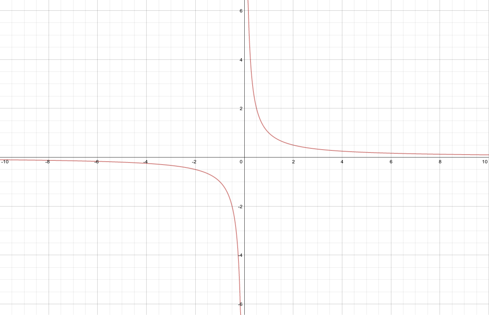

Limits¶

How to write asymptotes in limit notation¶
Source:
Explanation:
This artifact demonstrates how to write asymptotes in limit notation.
Example 1)
As x becomes extremely large, the value of f(x) approaches 2, and the value of f(x) can be made as close to 2 as one could wish just by picking x sufficiently large.
The limit of f(x) as x approaches infinity is 2.
Example 2)
As x approaches 0, \(f(x)\) approaches positive or negative infinity, depending on which direction x is approaching from. This is because the closer the number gets to 0, the smaller it has got to be. For x-values like 0.0001, \(f(x)\) will actually be a big number because \(f(x) = {1 \over x}\)
Inversely, as x approaches positive or negative 0, \(f(x)\) approaches 0 because \(f(x)\) is always a fraction. As the demominator of the fraction increases, it’s value decreases and is getting closer and closer to 0.
Artifact:
Example 1)
\(f(x) = {2x - 1 \over x}\\ \lim_{x \to \infty} {2x - 1 \over x} = 2\)
Example 2)
\(f(x) = {1 \over x}\\ \lim_{x \to 0} {1 \over x} = \pm \infty\\ \lim_{x \to \pm \infty} {1 \over x} = 0\)
Removable discontinuity¶
Source: Online Tutorial
Independent Thinking
I didn’t know what to show about removable discontinuity, I just knew what it was.
So I went online and read about it to figure out how it works.
Explanation:
This artifact demonstrates removable discontinuity.
Discontinuity is removable if you can easily plug in the holes in its graph by redefining the function.
In the original function, for -2 and 2 f(x) is undefined. But a little bit of algebraic magic reveals that the function can be “patched” for f(2) to be successful.
Artifact: